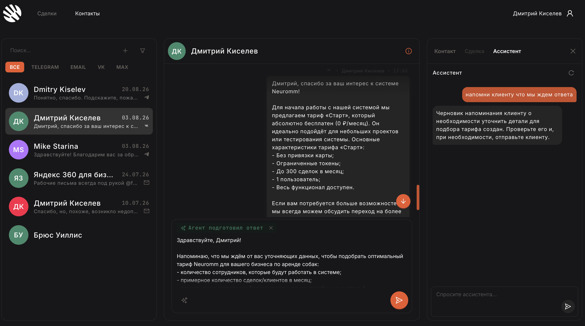
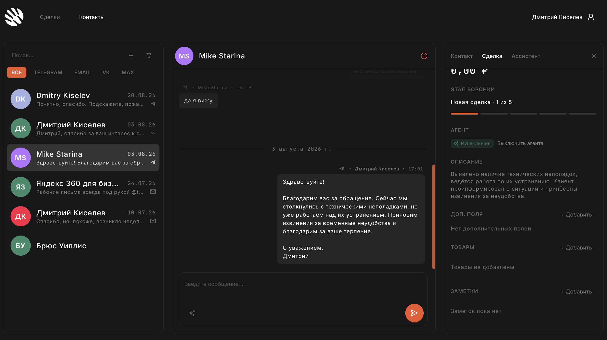
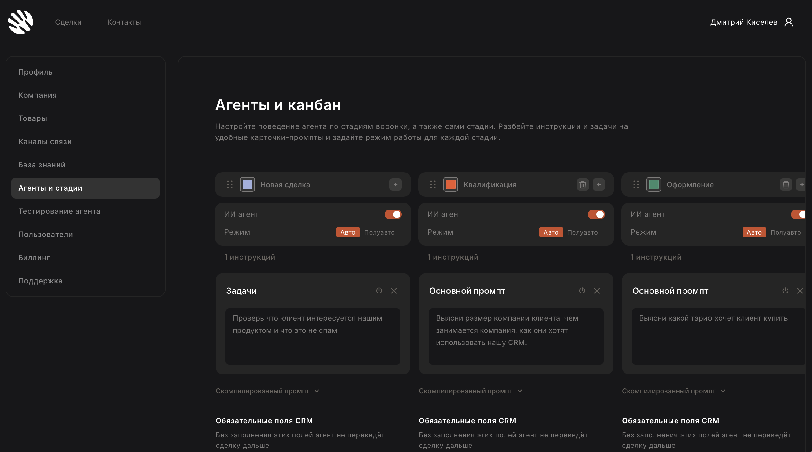

Product · Lead Product Engineer
Neuromm
An AI-powered CRM that automates inbound sales for SMBs. I designed the UX/UI and the working surface: inbox, deal context, and an agent that drafts and acts without becoming a separate product.
- Role
- UX/UI, product engineering
- Stack
- React · NestJS · WebSockets
- Live
- neuromm.com



Why it looks this way
Operators live in the inbox all day. The agent has to show up there — as a draft, a toggle, a stage card — not as a chatbot on another URL.
-
Three panes, one job
Channels, the thread, and context (deal or assistant) stay on one dark canvas. You never leave the conversation to “go use AI”.
-
The agent writes in the thread
Suggested replies sit in the same column as human messages, with a send control. Trust comes from seeing the draft before it goes out.
-
Behavior as stage cards
Each funnel stage is a card with auto/semi-auto, tasks, and the prompt. Agent logic is editable in the same visual language as the board, not buried in a prompt dump.
-
Dark, quiet chrome
A working CRM should recede. Accent is reserved for primary actions so the content — people, deals, drafts — stays loud.